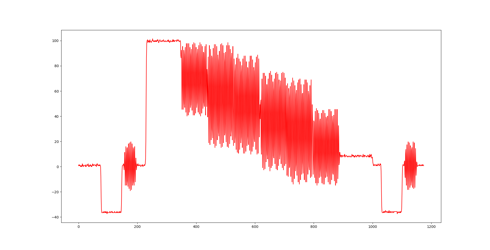

Note: the code on this page is very fragile and is being used only to give some idea of what TensorFlow can do.
Visualizing training with tfjs-vis
tfjs-vis is a small set of visualization utilities to make it easier to understand what is going on with your tfjs models. It is designed in a way to work along side regular web apps. This page will use some of the features of tfjs to illustrate what is going on with a convolutional model that will be trained (in the browser) to recognize handwritten digits.
Note: I won't be using the MNIST database in the final deliverable although we are using the MNIST dataset for this example.
tfjs-vis provides 2 main things:
- A place to put visualizations that tries not to interfere with your web page. We call this place a visor.
- Some built in visualizations that we have found to be useful when working with TensorFlow.js
Another note: you have to click the buttons in order to see what is going on.
The Visor
The Visor
Let's take a look at the first. Calling tfvis.visor() will create a visor if it
doesn't
exist or
return
the existing one. Click the button below to show the
visor.
Notice the panel that is now displayed on the right. It hovers over your pages content and shouldn't disturb the flow of your page's DOM Elements. You can see a few controls for showing or hiding the visor, but by default it also supports the following keyboard shortcuts:
- ` (backtick): Shows or hides the visor
- ~ (tilde, shift+backtick): Toggles betweeen the two sizes the visor supports
Surfaces
To add content to the visor we need a surface. We make a surface with the following function call:
To create a surface we must give is a name, we can also optionally specify a tab name that
the
surface should
be put on.
visor().surface() allows us to create a surface if it doesn't exist or fetch it
if it
does. This
API
returns an object that has a pointer to 3 DOM elements:
- container: The containing DOM element for the surface
- label: The label element
- drawArea: A DOM Element where we can render visualizations or other content.
Our Data
I will provide data for three different training sessions. It is data that I captured several years ago but it will be a good test for TensorFlow. The data is three different images captured as video signals, which we will apply Machine Learning techniques to and ultimately display a Machine Learned image found in the data. The image below is an example of one video scan line. TensorFlow will have to find the pattern of the scan line and build an array that will display a picture on the page.

The code to render these examples isn't built into tfjs. But because you have full access to the DOM element for each surface, you can draw whatever you would like into them. This allows easy integration of custom visualizations into the visor.
Training Our Model
Our goal is to build a fram from video signals using Machine Learning. The example below is a real time example of the MNIST data being learned in real time.
First let us define a helper function to do our training.
We can use the show.fitCallbacks method to get functions that will plot the loss after
every batch
and
epoch.
Another option is to wait for the training to complete and render the loss curve when it is done.
Evaluating Our Model
The Machine Learned image will be displayed below. There would be a more sophisticated placeholder if I hadn't spent so much time breaking the code.